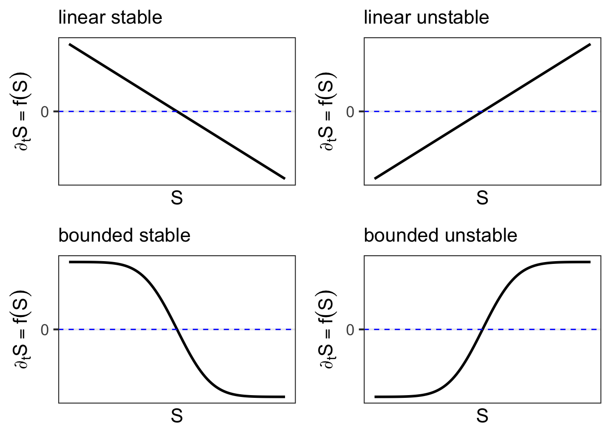
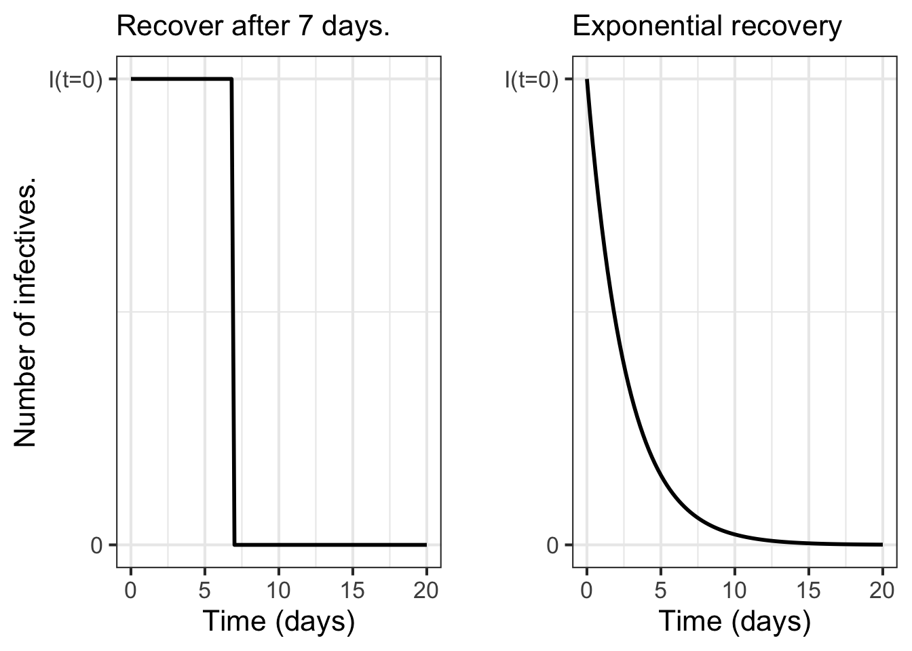
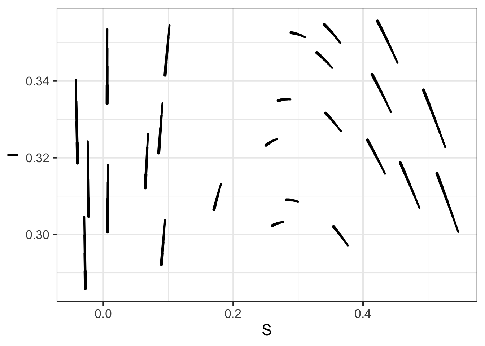

44 Modeling dynamics
It is a truism that starting a painting with a blank canvas can be daunting: so much choice and so many possibilities can be disabling. The same is true when it comes to constructing a model of a new phenomenon. You will need to decide what are the essential features of the phenomena, how they are connected to one another and how they connect to the question you seek to answer with the model you will eventually build.
For painters, there are numerous ways to confront the blank-canvas function. For instance, there are different types of paintings: landscapes, portraits, abstract, and so on. And there are different styles of painting: impressionist, rococo, cubist, art deco, and so on. I don’t think that painters would use this term, but I think of these aids to decision making as a framework, an organization of what you know to guide decision making.
Three of the frameworks for modeling that we have worked with in this book might be called:
- Function shape. Possibilities are bump, sigmoid, oscillatory, exponential, and so on. We’ve also worked with the low-order polynomial as a function-shape framework, which reduces the decision making to which terms to include in the polynomial.
- Differential equations. Constructing a model as a differential equation enables the modeler to separate the accounting work of accumulation over time and focus on capturing the relationships that tell, at any instant in time, which way the change will go. In working with this framework, the modeler decides what will be the state variables. Then, the modeler turns to the function shape framework to describe how the state variables themselves determine in which direction the change of each goes.
- Modeling cycle. Most people are taught that mathematics is about precision, exactitude, and a correct answer. In many settings, this is appropriate. But often the role of mathematics is to provide a language to express ideas about relationships and then to play out the consequences of those ideas. It is not usually critical that the relationships are being exactly described; observing the calculated consequences from a given statement of the relationships can provide deeper understanding of the system being studied or reveal that the description of the relationships does not lead to realistic consequences and so is incomplete or wrong.
44.1 A single state quantity
We will start with situations that can be modeled with a single state variable. Throughout our examples, we will call that state variable \(S\), so the differential equation describing how \(S\) changes in time will always be \[\partial_t S = f(S)\]. The modeler chooses the shape of \(f()\) depending on the situation being modeled.
In principle, there is an infinite number of shapes for \(f(S)\). But many modeling settings involve behavior that is simple. We will work with function shapes where the dynamical function \(f(S)\) is continuous and has one or two fixed points.
Tip
If \(S\) is observed to oscillate or to reverse the direction of change, then there must be at least one more state variable, that is, at least one more quantity that changes in time. A single first-order differential equation will not be able to model the situation.
If there are no fixed points, then the only possible dynamics are continuous increase in \(S\) or continuous decrease in \(S\). Often, the point of interest will be whether there is some other factor that changes increase to decrease or vice versa. Again, such situations should be modeled in the context of at least two state variables.
Figure 44.1 shows four generic dynamical function shapes where these is one fixed point. The location of the fixed point is, of course, the \(S_0\) at which \(f(S_0)=0\), that is, the intersection of the function and the blue dashed line.
The fundamental distinction is between models with stable and models with unstable fixed points. When the situation being modeled has a steady equilibrium, only the stable shapes of \(f(S)\) are relevant. A second distinction is between functions with a bounded shape and those with a linear shape. Use a linear shape when you are concerned only with the behavior near the fixed point. But when your model needs to account for behavior far from the fixed point, you need first to have a way to represent what is meant by “far from.” That is represented by the location of the shoulder of the curve relative to the fixed point.
A setting for a linear stable model is the cooling or warming of an object to the ambient temperature. \(S\) stands for the temperature of the object and the fixed point is the ambient temperature. This model often goes under the name Newton’s Law of Cooling. The prestige of the model name distracts from the fact that this is a very simple model. But in the real world there are likely to be complications that make Newton’s Law imprecise, unlike, say, Newton’s Second Law of Motion which is exact (at non-quantum and non-relativistic scales). For instance, a cup of hot water will cool faster than a cup of cold water. In hot water, evaporation from the surface speeds up the warming. When ice is involved, the rate of temperature change slows when melting or freezing is encountered.
Another classic setting for a linear, stable model is radioactive decay. The rate at which the atoms in a mass of a radioactive isotope decay is a constant \(\alpha\) that depends on the nuclear structure. A mass of \(n\) atoms will produce \(\alpha n\) individual decay events in a given time interval. But, since each decay event reduces \(n\) by 1, the differential equation describing the number of radioactive atoms is \[\partial_t n = - \alpha nt\] which leads to exponential decay towards zero. Notice that only the \(0 \leq n\) half of the state space is relevant, because the number of atoms cannot be negative.
An example of a setting where the bounded stable model applies is one where \(S\) stands for the amount of prey or food stock, and there is a constant population of predators who have a limited capacity for eating. Consider, for example, \(S\) being the availability of acorns. There might be a fixed population of, say, oaks that produce acorns at a given rate. When predation is low, the acorns accumulate. But when there are a lot of acorns, predators might focus on that bountiful food source. Still, they can only eat so many acorns per day before they are full.
Tip
Remember that in a differential equation \(\partial_t S = f(S)\), the input to \(f()\) is has dimension \([S]\), while the output of \(f()\) has a different dimension: \([S]/[t]\). Thus, in the oak/acorn example above, the output of \(f()\) has a dimension corresponding to acorns per day, a rate of consumption. \(S\) is acorns, the output of \(f(S)\) is acorns per day.
The linear unstable model is often used to model population growth. The underlying idea, which might or might not correspond to reality, is that there is a set reproduction rate per member of the population. The differential equation is \[\partial_t{S} = a S + c\] with \(S\) being the size of the population. The parameter \(c\) captures immigration (\(0 < c\)) or emigration (\(c < 0\)). To be more detailed, the model can be written as summing a birth process and a death process: \[\partial_t S = b S - d S + c\] where \(b\) is the birth rate and \(d\) is the death rate. Of course, the detailed model collapses arithmetically to the \(a S + c\) model, with \(a = b - d\). Still, elaborations on the birth or death processes may include the influence of changing factors. We will return to this idea in a bit.
Take care to use the parameters \(a\) and \(c\) correctly. The output of \(f(S) = a S + c\) must have dimension \([S]/[t]\), for instance organisms per hour might be appropriate for bacteria. Thus the individual terms \(aS\) and \(c\) must have dimenion \([S]/[t]\). Consequently, the parameter \(a\) has dimension \(1/[t]\) as in per hour. That might seem odd until you remember that \(a\) is about the creation of new organisms, \([S]/t\), per existing organism. Thus the dimension of \(a\) is \([S] / [S][t]\) which works out to be simply \(1/[t]\).
For bacteria, the linear unstable model may be realistic for short periods of time, or, more precisely, for as long as the population is small compared to the carrying capacity. In contrast, human and other animal populations often have an important age structure, which is just to say that neither a 6 nor a 60 year old person has the same reproduction rate as a 26 year old. Such an age structure calls for a dynamical state with multiple components.
But if the environment is steady—no food shortages, no disease, economy unchanging, etc.—it can be reasonable to describe even age-structured populations as a percentage growth per unit time, e.g. percent per year. Realize that such a description is not only about the biology of reproduction, but summarizes the whole system of aging, death, and reproduction. This summary description may no longer be relevant when the system as a whole changes. An example of this in the human population is seen in countries where the number of births per woman has fallen substantially—by half or more—over the time of a generation. Such falls typically accompany a growth in economic wealth and the realization that more resources (e.g. education) needs to be provided to each offspring.
The bounded unstable model is a way to incorporate factors that interfere with sustained exponential growth. Exponential growth requires that the growth rate \(\partial_t S\) increase as \(S\) increases: a kind of positive feedback. In the bounded model, the growth rate becomes constant for large \(S\). A constant growth rate means that \(S\) will grow steadily, that is \(\partial_t S = c\) which has a solution that grows linear in time, as distinct from the exponential solution that results from \(\partial_t S = a S\).
An application of the bounded unstable model is seen in the description of micro-organism growth given by Jacques Monod (1910-1976), a Nobel Prize winning biochemist. His idea was that the organisms are reproducing in a kind of sea that has a limited concentration of an essential nutrient, but very large amounts of the nutrient spread out over space. Even though the nutrient is begin consumed by the organisms, more nutrient diffuses in from far away to keep the concentration steady. At large population sizes, the growth rate is nutrient concentration limited, hence constant.
Chapter 16 introduced the idea of a modeling cycle: taking an initial model, examining the consequence/predictions of that model, and then modifying the model to better correspond to observed reality or new mechanism.
A case in point is the linear unstable model for population growth. The linear model is always appropriate near a fixed point. This is just a consequence of the calculus idea that any function can be approximated by a linear function over a small enough domain. In defining derivatives, the question was what constitutes “small enough.” So a linear dynamical function is a good starting point for dynamics near a fixed point. But, as we’ve seen, extending the linear model far from the fixed point leads to population explosion: exponential growth. This can be a valid idea for modeling a pathogen growing in a bowl of room-temperature chicken salad: the pathogen need not consume all the salad to become a threat, so in the domain of interest—human health—the linear model can do the job.
But we observe generally that exponential growth does not continue indefinitely. The demographer Thomas Malthus (1766-1834) famously propounded a “principle of population” which held that it is in the nature of populations to growth exponentially until linally limited by famine or disease. He wrote, “[G]igantic inevitable famine stalks in the rear, and with one mighty blow levels the population with the [lack of] food of the world.”
Malthus’s model is exponential growth that runs into a wall of limited food. Malthus saw human reproduction as the engine of the immense poverty and suffering of the lower classes in early industrial Britain. This became the basis of an important political dispute, two poles of which are “there is no point helping the poor, because they create their own poverty,” and “the poverty is due to exploitation, not reproduction.”
For us in calculus, there is a middle road: Malthus’s mathematical model, the unstable linear model, is much too abrupt and narrow minded and can easily be made more realistic. Adding that realism removes the “one mighty blow” from the situation. Let’s add that realism now.
Recall the earlier suggestion that the linear unstable model \(\partial_t S = a S + c\) be broken into components: \[\partial_t S = \underbrace{b S}_{\text{births}} - \underbrace{d S}_{\text{deaths}} + \underbrace{c}_{\text{immigration}}\ .\]
Even in Malthus’s time, there were calls to alleviate poverty by encouraging people to leave for less crowded lands: emigration. In the dynamics, emigration corresponds to a negative value for \(c\).
Making \(c\) negative does not do the job on its own. Note that whatever the value of \(c\), the dynamics are unstable. Emigration at a constant rate changes the location of the fixed point, but since the dynamics are unstable, growth will still be unbounded. Suppose, however, that government policy sets an emigration goal not as a constant number of people per year but as a constant fraction, \(eS\) of the population. Now the dynamics become \[\partial_t S = b S - d S - e S\ .\] These dynamics are stable or unstable depending on the value of \(b - (d+e)\). If that value is negative, the dynamics are stable, if positive, the dynamics are unstable. The situation resembles (mathematically) that of a nuclear power reactor: the control parameter \(e\) has to be carefully manipulated to set the population at a fixed level.
But there are other things that come into play. One of them is that the parameter setting the death rate, \(d\), need not be constant. From Malthus’s perspective, \(d\) would change in episodes set by disease and starvation. In Malthus’s era, pandemics were common and wiped out a major fraction of the population in “one mighty blow.” Similarly, starvation plays out on a smaller time scale than reproduction and seems to cut through the population.
But the death rate can also be a function of population \(S\). For instance, \(d = d_0 + d_1 S\) corresponds to a death rate that increases gradually with population size. (The parameters \(d_0\) and \(d_1\) are positive.)
Similarly, birth rate can depend on population, that is \(b = b_0 - b_1 S\). As the population gets larger, there is less food and less space, and these changes can reduce the reproduction rate. (The parameters \(b_0\) and \(b_1\) are positive.)
These models for \(d\) and \(b\) are simplistic. Why should they have a linear form? The answer is … calculus. Whatever are the functions \(b(S)\) and \(d(S)\), they must be approximately linear over a small domain.
Let’s plug in the refined models for birth and death rates into the population models. We get: \[\partial_t S = (b_0 - b_1 S) S - (d_0 + d_1 S) S - e\ .\] A little algebraic simplification reduces this to:
\[\partial_t S = (b_0 - d_0) S - (b_1 + d_1) S^2 - e\] Whatever are the size of the quantities \(b_0, b_1, d_0, d_1\), so long as they are positive, the dynamical function \(f(S)\) will have two fixed points, one at small \(S\) and the other at large \(S\). For small \(S\), the fixed point is unstable. The population will grow away from this fixed point. The fixed point at large \(S\) will be stable, hence no population explosion.
One of the major flaws with the Malthusian viewpoint is that it treated all the dynamical functions as linear, whereas in reality the functions can have a quadratic shape. The classical differential equation for limited population growth, \[\partial_t S = a S (1-S/K)\ ,\] was introduced by Pierre-François Verhulst in 1838, just four years after Malthus’s death.
Another important flaw with Malthus’s model is that it failed to account for the transition from purely agricultural economies to economies that produced large amounts of other goods and services. It turns out as populations grow wealthier, their reproduction rates decrease. With wealth available in non-food terms—clothing, public health, education—reproduction rates can go down even without the “one mighty blow” of starvation and disease.
The next section examines both of these factors—the introduction of multiple state variables and the ability to “soften” the explosive unstable linear dynamics with nonlinear corrections—in making subtle models of the behavior of systems.
44.2 Multiple state quantities
The previous section examined dynamics of a single state variable. Now we will consider the possibilities when there is a second state variables. It turns out that adding more state variables above two does not introduce many fundamentally new behaviors, so we will focus on dynamical systems with two variables. We will continue to use capital letters, like \(S\), to stand for the state variables. But with two (or more) state variables, we will need to give them different names so we can keep tract of what’s doing what to what. The parameters in the dynamical functions will, as has been our practice, be written as lower-case letters, such a, b, r, c, and so on.
A starting observation is that for dynamics to be genuinely two-dimensional, the differential equations for the state variables need to be coupled to one another. For example, a dynamical system that nominally has two state variables \(X\) and \(Y\) is:
\[\partial_t X = f(X)\\ \partial_t Y = g(Y)\ .\]
The state variables here are not coupled, since the change in each variable depends only on the value of that variable and not on the other.
Coupled state variables have dynamics that look like this:
\[\begin{eqnarray} \partial_t X & = f(X, Y)\\ \partial_t Y & = g(X, Y)\ .\\ \end{eqnarray}\] The time evolution of each state variable depends on the other state variable.
The most mathematically simple form of coupled dynamics is this:
\[\begin{eqnarray} \partial_t R & = a B\\ \partial_t B & = c R\ .\\ \end{eqnarray}\]
What type of real-world setting might such a simple model correspond to? Surprisingly, even this simple model has important things to say about complex phenomena such as love and warfare.
We will start with warfare, where the signs of the parameters are easy to determine. The model, called Lanchester’s Law, is \[\begin{eqnarray} \partial_t R & = - b B\\ \partial_t B & = -r R\\ \end{eqnarray}\] with both parameters \(r\) and \(b\) taken to be positive.
The state variables \(R\) and \(B\) stand for the size of the two armies in conflict: the Red army versus the Blue army. As the two armies meet in battle, the Blue army causes casualties in the Red army. These casualties reduce the size of the Red army. Similarly, the Red army causes casualties in the Blue army.
The model describes the rate of reduction in the armies as being proportional to the size of the opposing army. But the two armies can be different in their efficiency of causing casualties, reflected by possibly different values of the \(r\) and \(b\) parameters.
The dynamics are not exponential. Exponential decay of the army size would correspond to a model like \(\partial_t R = - r R\), an army fighting itself. But the Lanchester model has \(\partial_t R = - b B\).
We will defer for a moment finding the trajectories of the state variables in the course of battle. (Hint: in the model, one army wipes out the other.) Instead, we will focus on a surprisingly rich implication of of such simple dynamics.
Lanchester’s Law has a surprising consequence for measuring the overall strength of a force in a way that combines size (\(R\) and \(B\)) and effectiveness (\(r\) and \(b\)) and the implications that has for tactics.
Lanchester proposed that the quantity \[Q(R, B) \equiv rR^2 - b B^2\] is a good way to characterize the dynamics. His reasoning was based on a fundamental idea from physics and chemistry: that quantities are conserved. In physics, examples of conserved quantities are energy, momentum, and angular momentum. In chemical reactions, the number of atoms of each species is conserved.
It is hard to say how Lanchester came up with the formula \(rR^2 - b B^2\): insight is hard to explain. But we can easily demonstrate that it is conserved, that is, the quantity does not change in time regardless of how the battle proceeds. We will do this by showing \(\partial_t Q(R, B) = 0\).
\[\partial_t Q(R, B) = \partial_t \left[\strut rR^2 - b B^2\right]\] Applying the chain rule we find that \[\partial_t r R^2 = 2 r R\, \partial_t R\ \ \ \ \text{and}\ \ \ \partial_t b B^2 = 2 b B\, \partial_t B\ .\] Substituting in \(\partial_t R = - b B\) and \(\partial_t B = - r R\) gives \[\partial_t Q(R, B) = - 2 r b R B + 2 b r B R = 0\ .\] The conserved quantity \(Q(R, B)\) describes an aspect of the battle that goes unchanged over the course of the battle. At any moment, it describes the match between the overall capability of the two armies. That the difference between the capabilities is conserved does not mean the individual capabilities are unchanged in battle. Those capabilities decrease as the army sizes, \(R\) and \(B\) are reduced. But at any instant in time, the capability of each army is proportional to the square of the army size. change The consequence, is that the capability of each army is, at all times,
To illustrate, consider a battle between two armies of archers. The B-army archers are more skilled: they can fire 12 arrows per minute. The R-army archers can fire at only half the rate—6 arrows per minute. But the R army is twice the size of the B army.
Are the armies equally matched? It may at first glance seem so, since both armies can fire at the same rate. For instance, if there are 1000 archers in the R army and 500 in the B army, both armies start capable of firing 6000 arrows per minute. But Lanchester’s Law tells us that the R army is twice as capable as the B army: \(6 \times 1000^2\) is twice as big as \(12 \times 500^2\).
To see why the R army is superior, remember that each arrow can take out only one of the opposing archers. For each B arrow that is on target, the firing rate of R is reduced by 6 arrows per minute. But for each R arrow that hits, the firing rate of B is reduced by 12 arrows per minute. The initial casualty rate for the two armies is the same, but B sees a twice as large reduction in its firing rate.
Mathematician Steven Strogatz proposed in the 1990s that similar equations might be used to describe how love between two people varies over time. Strogatz’s equations are usually written with state variables R and J, standing for Romeo and Juliet. Positive values represent love, negative values are hate. And best to think of the model as a cartoon, but a cartoon that captures some of the behavior seen in reality.
To start, let’s consider a form of love that is really more like warfare:
\[\partial_t R = -j J\\ \partial_t J = - r R \ .\] In this pathological relationship, the more Romeo loves Juliet, the faster Juliet’s love decreases toward hate. And vice versa.
Imagine that, somehow, these two perverse people started out in love: \(R(t=0) > 0\) and \(J(t=0) > 0\). As with Lanchester’s Law, both lovers fall increasingly out of love. Depending on the initial intensity of their love and whether or not \(jJ^2\) is bigger than \(rR^2\) (Lanchester’s conserved quantity), one of the parties will become indifferent, that is, a love level of 0 while the other’s love level is still positive. For the purpose of example, let’s suppose that Juliet is the first to reach indifference. But unlike the warring armies, the love quantity can become negative. As Juliet’s love becomes negative—remember, Romeo still has a positive level of love—then the true perversity of Romeo’s personality becomes apparent. Juliet’s increasing hostility causes Romeo’s love to grow. Without bound, because this is a linear dynamical function. The result is that Juliet’s hate increases even while Romeo’s love increases. But don’t blame Juliet. If Romeo had been the first to reach indifference, Juliet would suffer the unrequited love and Romeo would be villainously hateful.
Strangely, if Romeo and Juliet started out mutually hating each other, their personalities would still lead to one having unbounded love for the other, who hates their partner without limit.
A mathematically small change in the Romeo-Juliet dynamical system can lead to a profound change in the outcome. For instance, changing one sign, as in \[\begin{eqnarray} \partial_t R & = r J\\ \partial_t J & = - j J\ ,\\ \end{eqnarray}\] produces, as we will see, a never-ending cycle of alternating love/hate.
The two dynamical functions in the previous examples, \(-r R\) and \(-j J\) are low-order polynomials. A sensible human being might suggest that the constant term in the polynomials should be added, but the cold, analytic mind of the mathematician would see that this would only change the location of the fixed point and not its stability. That suggests that the next more complicated model to consider involves includes both variables in the dynamical function. Like this:
\[\begin{eqnarray} \partial_t R & = a R + b J\\ \partial_t J & = c R + d J\ ,\\ \end{eqnarray}\]
where the coefficients \(a, b, c, d\) might be either positive or negative depending on the personality of the lovers. Analysis of this model will have to await the introduction of new mathematical tools in Chapter 46.
Whether Strogatz’s love model is realistic or not, it does illustrate a basic idea of model building: start with simple dynamical functions, check out their consequences, then modify the dynamical functions. We will do this now, with the modifications being purely mathematical along the lines of including different terms in low-order polynomial approximations and considering positive and negative coefficients. As you will see, the simple models correspond to a surprisingly wide range of behaviors.
44.3 Classical phase-plane models
We have been using the term state space to refer to the set of possible values for the state variables. When there is only one state variable, the state space corresponds to the number line, or perhaps just the positive half of the number line. When there are two state variables, the state space corresponds to the coordinate plane; any point in the plane is a legitimate state for the system.
Historically, another term is used for the two-variable state space: the phase plane. This is just a matter of terminology, but it is so prevalent that you will occasionally see it mentioned. We don’t use it since dynamical systems can have a state space that is 1, 2, 3, or higher dimensional, but the phrase “phase plane” only works for 2-dimensional state spaces.
In this section, we will look at some famous models that involve two state variables. Out of respect for history, we will call these “classical phase plane” models, but this is entirely equivalent to saying “classical dynamical models with two state variables.”
Our purpose in studying these classical models is two-fold: to show how simple models can make it easier to draw out the consequences of the mechanisms that we think are at work in real-world systems; and to show you how modifications to purely linear models can produce dynamics that are realistic even away from fixed points.
To start, let’s return to the Rabbit-Fox dynamics models. Classically this is called the predator-prey model. It is also called the “Lotka-Volterra” model in honor of it is inventors: American biophysicist Alfred Lotka (1880-1949) and Italian mathematical physicist Vito Volterra (1860-1940).
The two first-order differential equations in the Lotka-Volterra model are \[\begin{eqnarray} \partial_t R & = \alpha R - \beta F R\\ \partial_t F & = \delta F R - \gamma F\ ,\\ \end{eqnarray}\] each of which contains a linear term (\(\alpha R\) in the \(R\) equation, \(\gamma F\) in the F equation). Each equation also contains an interaction term. Here, the mathematical/statistical name for the product of two quantities corresponds nicely with the physical reality that the terms describe what happens to rabbits when they interact with a fox, and similarly what happens to foxes. The parameters \(\alpha, \beta, \gamma\), and \(\delta\) can, mathematically, be either positive or negative, but they make sense as representations of rabbits and foxes only if all of them are positive. So the “interaction” is always negative for the rabbits and positive for the foxes.
Rewriting the model provides a bit of insight: \[\begin{eqnarray} \partial_t R & = \underbrace{(\alpha - \beta F)}_{k_R}\ R\\ \partial_t F & = \ \underbrace{(-\gamma + \delta R)}_{k_F}\ F\ . \\ \end{eqnarray}\] Think about the \(k_R\) and \(k_F\) terms as the reproduction rates. If the fox population were constant, then the rabbit dynamics would be exponential growth or decay, depending on the sign of \(k_R = \alpha - \beta F\). Similarly, if the rabbit population were constant, the fox dynamics would be exponential decay or growth, depending on the sign of \(k_F = -\gamma + \delta R\).
The two equations are coupled so that the rabbit population alternating between growth and decay leads the fox population to so alternate, and vice versa.
44.4 Epidemic
In a communicable disease, such as COVID-19, the infectious agent is transmitted from an infective person to another person who is susceptible. The time course of an epidemic can be modeled simply with two state variables. We will let \(S(t)\) be the number of susceptible people and \(I(t)\) the number of infective people at any time \(t\).
The dynamics of the \(S\) variable can be simple: \(S\) changes when an infective person meets (interacts with!) a susceptible person. That susceptible person, with some probability, becomes infective. So \[\partial_t S = -\beta S I\ .\] The dynamics of the \(I\) variable are a just a little more complicated. First, every person who is converted from susceptible to infective becomes a new infective. This is the \(\beta S I\) term in the following differential equation. Second, infectives gradually recover. This is often modeled as a simple \(-\alpha I\) term.
\[\partial_t I = \beta S I - \alpha I\] This is famously called the SIR model, standing for the susceptible, infective, recovered chain of events.
In the model, recovery means “no longer able to infect.” Thus, a person who has been isolated is considered “recovered,” whether or not they display symptoms of the disease.
We usually think of recovery as a time span, for instance taking a week to recover. But \(\alpha I\) does not work this way. To see why, consider the situation starting on the day that there are no more infective people, that is, \(S=0\). The dynamics from this day forward are simplified: \(\partial_t I = =\alpha I\).
Of course, the solution to this simplified differential equation is \(I(t) = I_0 e^{-\alpha t}\); the size of the infective group gets smaller exponentially. Figure 44.2 compares what \(I(t)\) would look like if it takes, say, one week to recover and what \(I(t)\) looks like under the model’s \(\partial_t I = =\alpha I\) dynamics.

To show the dynamics of the SIR model, we need to propose numerical values for \(\alpha\) and \(\beta\). This is not a trivial matter if the goal is to match the dynamics to a particular disease and size of population. For our purposes here, we will imagine that \(S(0) = 0.999\) and \(I(0) = 0.001\), which is to say we are looking at the proportion of the population that is susceptible or infective.
Figure 44.3 shows the flow field for \(\beta = 1/2\) and \(\alpha = 1/7\).
